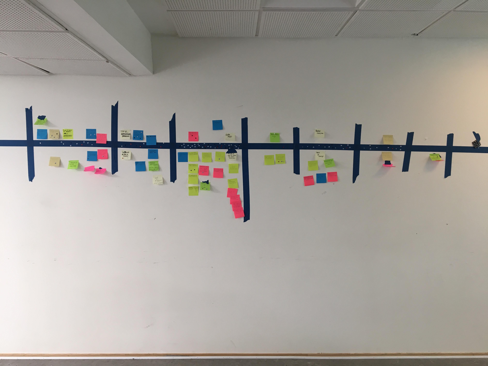
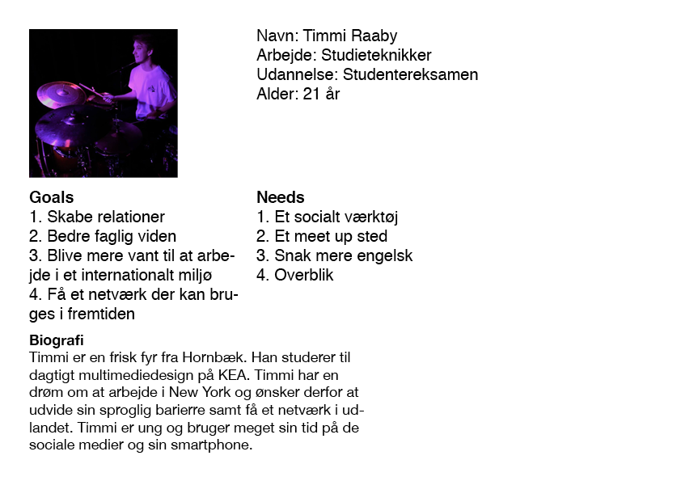
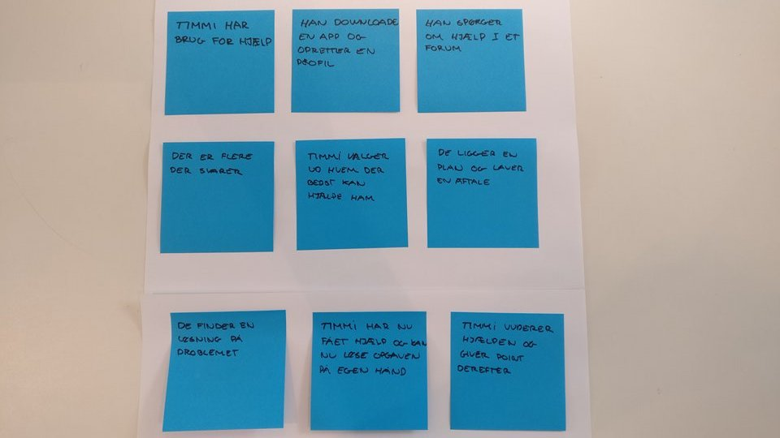
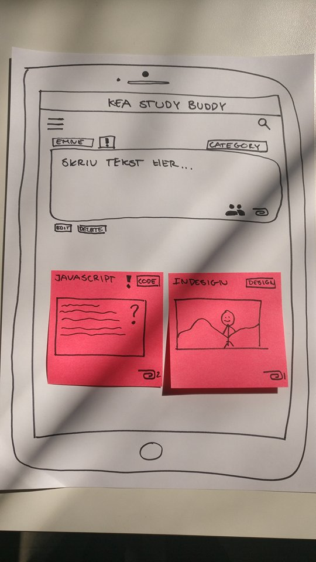

Github
Link til GitHub-repository
Dokumentation af empiri
Data-mining
Hvad bruger du din smartphone til?
Jeg har ikke en
Jeg bruger den til at kommuniker med andre, holde mig opdateret om vejr, nyheder, undervisnings skema, hører musik og tage billeder
Hvad foretrækker du at bruge din desktop til fremfor smartphone?
Jeg foretrækker at bruge min desktop til at læse lektier, se længere videoer eller film og at spille spil.
Hvad mangler du på KEA?
Bedre struktur og bedre overblik over hvad man skal lave hjemme, og om man har været fraværende.
Hvad er godt på KEA?
At lærerne bruger mikrofon i undervisningen og at det teknisk i forhold til lyd og projektorer fungere.
Hvad glæder du dig mest til i din gang på KEA?
Jeg glæder mig mest til at få længere perioder til at læse en opgave/skabe et produkt - sådan at man har mulighed for at gære det grundigt og færdigt.
Hvad glæder du dig mindst til i din gang på KEA?
At arbejde i gruppe med uambitiøse mennesker
Hvad bruger du Fronter til?
Skema, finde dagens lektier og opgavebeskrivelser, aflevere opgaver, Gennemgår diverse slides fra lærerne, hvis jeg ikke har været i skole
Hvilke andre digitale platforme bruger du i forbindelse med dit studie?
Dribbble, Instagram , Behance osv.
Hvilke digitale platforme mangler du i forbindelse med dit studie?
En app, som indeholder samtlige informationer som skal bruges på de forskellige semestre. En app der indeholder de svar som man normalt ville spørge læren om, en slags leksikon for design filosofier og materiale.
Hvor må der du de internationale studerende på KEA?
Er kun stødt på dem to gange under intro ugen
Hvor forstiller du dig, at du skal i praktik?
Eventbureau, marketingsbureau eller et brandingbureau
Hvilke fordele kan du se ved at arbejde mere sammen med international linje på MMD?
Det er vigtigt at kunne arbejde på tværs af sprogbarriere, og giver en styrke hvis man kunne ønske sig at arbejde i udlandet. Derudover kan ens forskellige kulturelle baggrunde forstærke hinandens kompetencer.
Experience Map

Problemstilling
“Multimediedesignstuderende på den danske og den internationale linje har ikke meget med hinanden at gøre, det vil KEA gerne gøre noget ved. Men hvordan kan en KEA app understøtte dette? KEA app’en må også gerne forbedre de studerendes muligheder for at få et arbejde efter endt uddannelse.”
Problemformulering
Der er brug for et forum, hvor danske og internationale linjer kan mødes og hjælpe hinanden med lektiehjælp og samtidig kan skabe relationer på kryds og tværs - så der bliver skabt et bedre studiemiljø
Persona

Storyboard

AOF
Features og funktionaliteter
Opret et post
Insæt fil/billede
Søg funktion
Videresend
Rediger post
Slet post
Vuderings system
Emne
Grupper
Papirprototype
